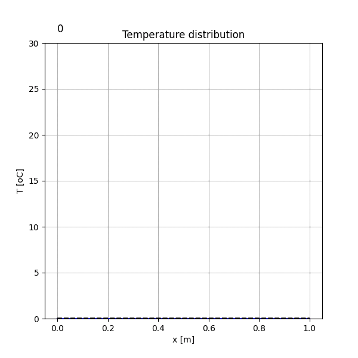

This lesson handles programs that create a 1D graph animation. The exercises involve describing the analytical solution to the heat diffusion equation and visualizing the process of heat diffusion over time.
1dPlotAns.py)Running the answer script will produce an animation showing the temperature distribution changing over time. The red line represents the standard case, the blue line has a diffusion coefficient 10 times larger, and the dashed black line is the initial state.

1dPlotAns.py)Below is the code from the answer key, with explanations for the key parts.
import numpy as np
import matplotlib.pyplot as plt
import matplotlib.animation as an
# --- (Omitted: Parameter Definitions) ---
L = 1.0 # length [m]
N = 101 # number of girds [-]
dx = L/N # grid spacing [m]
a = 0.00001 # diffusivity [m2/s]
dt = dx**2/(2.0*a) # time step [s]
y0 = 30.0 # initial temperature [oC]
x0 = L/2 # heat source location [m]
A = (5*dx)**2 # heat source distribution length^2 [m^2]
Nt = 20 # number of time step
# --- (Omitted: Coordinate Setup) ---
x = np.zeros(N+1)
for i in range(1,N+1):
x[i]=x[i-1]+dx
## define function
y = np.zeros(N+1)
yInit=np.zeros(N+1)
## Ex2: Initial Condition (Gaussian distribution)
yInit=y0*np.exp(-(x-x0)**2/A)
## time step loop
ys=[] # list to store results for animation (standard 'a')
ys2=[] # list to store results for animation (10*'a')
for i in range(0,Nt):
t=i*dt
# Ex3: Analytical solution for the heat diffusion equation at time t
y=y0*np.sqrt(A/(A+4*a*t))*np.exp(-(x-x0)**2/(A+4*a*t))
# Ex4: Case with 10x diffusivity
y2=y0*np.sqrt(A/(A+4*10*a*t))*np.exp(-(x-x0)**2/(A+4*10*a*t))
ys.append(y)
ys2.append(y2)
## visualization & animation
ims = []
fig = plt.figure(figsize=(6.0,6.0))
ax = fig.add_subplot(111)
# ... (Omitted: axis settings, titles) ...
plt.grid()
# Loop through the stored results to create animation frames
for i in range(len(ys)):
txt=ax.text(0, y0 + 0.04*(y0-0), str(i), size=12, backgroundcolor='white')
img=plt.plot(x,ys[i], label='a',color='red')
img2=plt.plot(x,ys2[i], label='10a',color='blue')
plt.plot(x,yInit, label='Initial',color='black', linestyle='dashed')
ims.append(img + img2 + [txt])
## Save the animation
ani=an.ArtistAnimation(fig,ims,interval=200)
ani.save('anim.gif', writer="imagemagick")
plt.show()
このレッスンでは、1次元のグラフをアニメーションで表示するプログラムを扱います。演習では、熱拡散方程式の解析解を記述し、時間とともに熱が拡散していく様子を可視化します。
1dPlotAns.pyより)解答スクリプトを実行すると、温度分布が時間とともに変化する以下のアニメーションが生成されます。赤線が標準、青線が拡散係数が10倍のケース、黒の破線が初期状態を示します。
1dPlotAns.py)以下に、解答例のソースコードと、その主要部分の解説を示します。
import numpy as np
import matplotlib.pyplot as plt
import matplotlib.animation as an
# --- (パラメータ定義は省略) ---
L = 1.0 # length [m] (長さ)
N = 101 # number of girds [-] (格子数)
dx = L/N # grid spacing [m] (格子間隔)
a = 0.00001 # diffusivity [m2/s] (拡散係数)
dt = dx**2/(2.0*a) # time step [s] (時間ステップ)
y0 = 30.0 # initial temperature [oC] (初期温度)
x0 = L/2 # heat source location [m] (熱源中心)
A = (5*dx)**2 # heat source distribution length^2 [m^2] (熱源分布幅)
Nt = 20 # number of time step (計算ステップ数)
# --- (座標設定は省略) ---
x = np.zeros(N+1)
for i in range(1,N+1):
x[i]=x[i-1]+dx
## 関数の定義
y = np.zeros(N+1)
yInit=np.zeros(N+1)
## Ex2: 初期条件（ガウス分布）
yInit=y0*np.exp(-(x-x0)**2/A)
## 時間発展ループ
ys=[] # アニメーション用の結果を格納するリスト (標準のa)
ys2=[] # アニメーション用の結果を格納するリスト (10*a)
for i in range(0,Nt):
t=i*dt
# Ex3: 時刻tにおける熱拡散方程式の解析解
y=y0*np.sqrt(A/(A+4*a*t))*np.exp(-(x-x0)**2/(A+4*a*t))
# Ex4: 拡散係数が10倍のケース
y2=y0*np.sqrt(A/(A+4*10*a*t))*np.exp(-(x-x0)**2/(A+4*10*a*t))
ys.append(y)
ys2.append(y2)
## 可視化とアニメーション
ims = []
fig = plt.figure(figsize=(6.0,6.0))
ax = fig.add_subplot(111)
# ... (軸設定やタイトル設定は省略) ...
plt.grid()
# 保存した結果をループしてアニメーションの各フレームを作成
for i in range(len(ys)):
txt=ax.text(0, y0 + 0.04*(y0-0), str(i), size=12, backgroundcolor='white')
img=plt.plot(x,ys[i], label='a',color='red')
img2=plt.plot(x,ys2[i], label='10a',color='blue')
plt.plot(x,yInit, label='Initial',color='black', linestyle='dashed')
ims.append(img + img2 + [txt])
## アニメーションの保存
ani=an.ArtistAnimation(fig,ims,interval=200)
ani.save('anim.gif', writer="imagemagick")
plt.show()